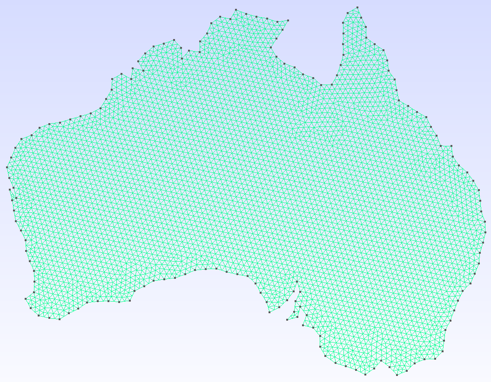
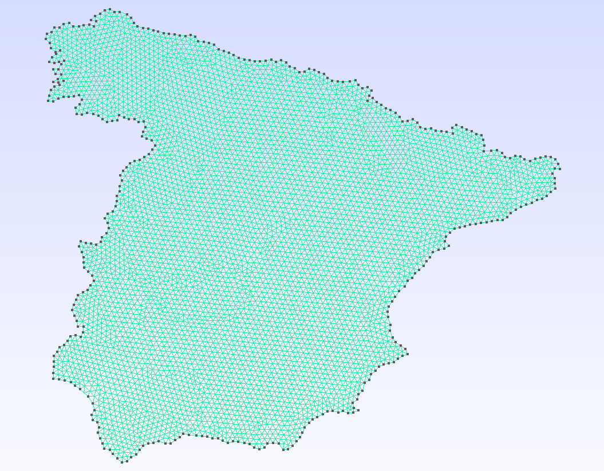

ShapefileToGmsh.jl
ShapefileToGmsh — Module
ShapefileToGmshConvert ESRI Shapefiles to Gmsh geometry (.geo) and mesh (.msh) files.
Typical workflow
using ShapefileToGmsh
# 1. Inspect the shapefile's attribute table.
list_components("regions.shp")
# 2. Generate a mesh for a single region (already in metres).
shapefile_to_msh("regions.shp", "output/my_region";
select = row -> row.NAME == "Catalonia",
proj_method = nothing,
edge_length_range = (5_000.0, Inf),
bbox_size = 100.0,
mesh_size = 2.0,
)Pipeline
shapefile_to_geo / shapefile_to_msh run these steps in order:
read_shapefile— parse the.shpgeometry, optionally filtered byselect.project_to_meters— reproject coordinates with the PROJ library.coarsen_edges/refine_edges— adjust edge resolution.filter_components— drop degenerate rings produced by coarsening.rescale— normalise geometry into anL × Lbounding box.write_geoorgenerate_mesh— write output.
A Julia package that converts ESRI Shapefiles into Gmsh geometry (.geo) and mesh (.msh) files, with full control over coordinate projection, edge resolution, and component selection.
 |  |
| Australia — geometry | Australia — mesh |
 |  |
| Spain | Catalonia |
Features
- Read & filter — load Shapefiles and inspect their attribute tables; filter records or individual rings by any DBF attribute, geometry size, or bounding box.
- Reproject — convert between coordinate systems via Proj.jl (e.g. geographic degrees → Web Mercator metres).
- Resample edges — coarsen over-resolved coastlines or refine coarse boundaries to a target edge length.
- Rescale — normalise geometry into a dimensionless bounding box so
mesh_sizestays consistent across datasets. - Output — write a human-readable
.geoscript or call the Gmsh API to produce a.mshfile directly; supports linear/quadratic elements and quad recombination. - Split components — one file per polygon ring, with user-defined filenames via
name_fn.
Installation
using Pkg
Pkg.add(url = "https://github.com/JordiManyer/ShapefileToGmsh.jl")Quick start
Inspect a shapefile
using ShapefileToGmsh
list_components("NUTS_RG_01M_2024_3035.shp")── Records (1798) ──────────────────────────────────
idx NUTS_ID LEVL_CODE CNTR_CODE NAME_LATN rings
──────────────────────────────────────────────────────
1 AL011 3 AL Dibër 1
2 AL012 3 AL Durrës 1
...
1490 ES51 2 ES Cataluña 1
...
1756 ES 0 ES España 6
...
── Rings (1802) ────────────────────────────────────
idx ring NUTS_ID ... n_pts area xmin xmax ymin ymax
───────────────────────────────────────────────────────────────
...Generate a mesh
shapefile_to_msh(
"NUTS_RG_01M_2024_3035.shp",
"output/nuts";
select = row -> row.NUTS_ID ∈ ("ES", "ES51") && row.ring == 1,
name_fn = row -> string(row.NUTS_ID),
proj_method = nothing, # already in metres (EPSG:3035)
edge_length_range = (10_000.0, Inf), # coarsen to ≥ 10 km edges
bbox_size = 100.0,
mesh_size = 2.0,
split_components = true,
)
# → output/nuts/ES.msh, output/nuts/ES51.mshPipeline overview
| Step | Function | Purpose |
|---|---|---|
| Read | read_shapefile | Parse .shp geometry, filter by record or ring |
| Reproject | project_to_meters | Convert coordinates via PROJ |
| Coarsen | coarsen_edges | Remove points on short edges |
| Refine | refine_edges | Subdivide long edges |
| Filter | filter_components | Drop degenerate rings after coarsening |
| Rescale | rescale | Normalise into an L × L bounding box |
| Output | write_geo / generate_mesh | Write .geo or .msh |
Each step is also available as a standalone function for more control. See the Pipeline guide and API reference for details.
Data sources
The example meshes above were generated from the following open datasets:
- NUTS — Territorial units statistics (Spain, Catalonia): Eurostat / GISCO, © European Union. https://ec.europa.eu/eurostat/web/gisco/geodata/statistical-units/territorial-units-statistics
- ASGS Edition 3 (Australia): Australian Bureau of Statistics. https://www.abs.gov.au/statistics/standards/australian-statistical-geography-standard-asgs-edition-3